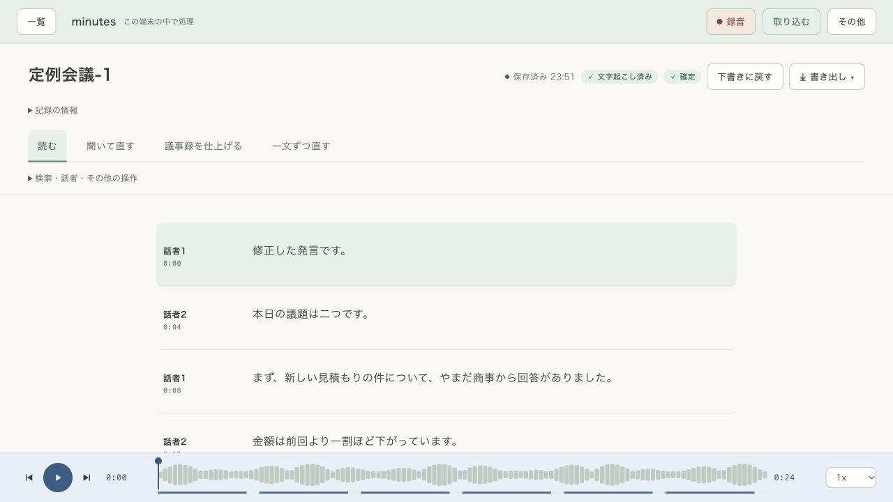

医療の打ち合わせ
個人の情報が含まれる話し合い。所属先の録音・保存ルールに沿って、音声を手元で整理したいときに。
院内の会議・ケースの振り返り医療の打ち合わせにも。研究のインタビューにも。
患者さんのこと。まだ発表していない研究のこと。
大切な会話を、クラウドに送らず文字にする。
minutesは、あなたのMacの中で働きます。

会話の行き先を、変える。
その会話にも、文字起こしという選択肢を。
文字起こしも要約も、あなたのパソコンの中で。録音を外に送らず、読み返せる記録に整えます。
データの扱いを詳しく →
アプリの入手・購入・更新には、インターネット接続が必要です。配布版には処理に必要なデータを同梱するため、インストール後の音声処理にはインターネットを使いません。端末・バックアップ・共有先の管理は、ご自身や所属先のルールに沿って行ってください。
扱う言葉が、大切なほど。
個人の情報が含まれる話し合い。所属先の録音・保存ルールに沿って、音声を手元で整理したいときに。
院内の会議・ケースの振り返り未発表の内容や、協力者から聞いた言葉。原音を確かめながら、固有名詞や数字まで丁寧に残すために。
研究室・質的調査・取材公開前の企画や、チームの相談。会話を読み返し、決まったことと次にすることを共有するために。
企画会議・少人数ミーティングひとつずつ、進めればいい。
読むときは、読むことに。直すときは、その一文に。
記録を仕上げるまでの4つの居場所を用意しました。
全文を段落で読み、会話の流れをつかむ画面です。
文字起こし・話者分離・要約には誤りがあり得ます。重要な内容は原音で確認してください。
最初の使い手になってください。
βテストの募集と公開の案内を、メールでお届けします。Mac・Windowsどちらの参加希望も受け付けます。
準備が整ったOSから順次ご案内します。参加は任意です。
メールアドレス・使いたいパソコン・利用場面をご登録ください。参加の案内を受け取れます。
βテストに登録するGoogleフォームが別のタブで開きます。Googleへのログインは不要です。
登録情報の扱いを確認する →自分の音声で、確かめてから。
FREE
累計60分まで・1件15分まで
PRO · 3,980円 買い切り
文字起こしの時間制限を解除
気になること。
音声を端末内で文字起こしする用途に利用できます。録音の同意、端末の保護、情報の保存・共有は所属先のルールを確認してください。医療上の判断や診療記録の自動確定を行う製品ではありません。
配布版には必要なデータを同梱します。インストール後の文字起こしと、Proの要約はインターネットなしで使えます。購入・アプリの入手・更新・データの修復ダウンロードには接続が必要です。
現在の録音入力はマイクです。ヘッドホンから聞こえる相手の声を直接録る機能には対応していません。保存した会議音声ファイルは取り込めます。
日本語に対応し、Proでは用語集が使えます。人名・専門用語・数字などは音質や会話によって誤るため、原音を聞いて確認してください。
Apple Silicon搭載Mac向けです。MacBook Air M2で動作確認しています。現在のアプリ本体は無料版が約203MiB、Proが約3.13GiBで、要約に必要なデータも含みます。配布ZIPの容量とは異なり、更新で変わることがあります。録音保存や処理のための空き容量も必要です。正式な対応OSと推奨メモリは配布時にご案内します。